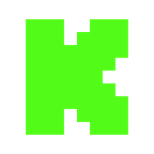
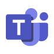
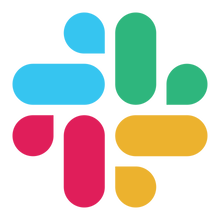
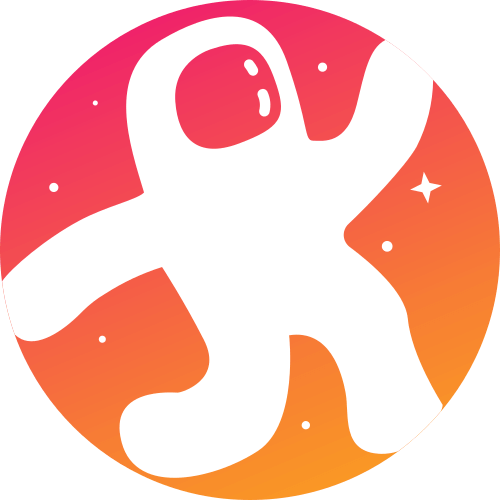
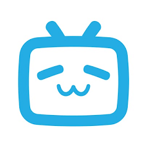
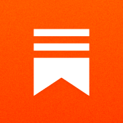

Voice AI Cohost
Jagage oma mikrofoni ja valitud reaalajas vestluse sõnumeid sama kohostiseansiga ning edastage seejärel selle suulised vastused.
Tooge YouTube'i, Twitchi, TikToki, Facebooki, Kicki ja muu sõnumid ühele armatuurlauale. Seejärel kuvage, rääkige, edastage, modereerige või vastake neile tehisintellektiga.
Ühendage Facebooki, Youtube'i, Twitchi, Zoomi, Instagrami, TikToki ja muuga – kõik ühelt armatuurlaualt.
Kuvage valitud sõnumid voos kohandatavate teemade ja animatsioonidega.
Automatiseerige vastuseid ja looge kohandatud käske skriptitatavate pistikprogrammidega.
Kasutage kohalikku või pilve AI-d hääljuhi, vestluse vastuste, modereerimise, tõlkimise, kokkuvõtete ja muu jaoks.
Teisendage vestlussõnumid kõneks tasuta ja tasuliste TTS-teenustega.
Saatke platvormideülese vestluse abil automaatselt sõnumeid ühelt platvormilt teistele.
Battle Royali minimäng ja vaatajate kaasamise tööriistad teie vestluse meelelahutuseks.
Looge interaktiivseid küsitlusi, hääli ja korraldage kingitusi – kõike seda kohandatavate teemadega.
Rääkige hääljuhiga, käivitage eraldi vestlusrobot või jäädvustage ChatGPT brauseri vestlus teise allikana. Iga režiim on valikuline.
Võtke ühendust vaatajaskonnaga kõigil oma lemmikplatvormidel







Toetatud üle 100 platvormi!
Vaadake täielikku loendit →Hankige kohest tuge meie sõbralikult kogukonnalt ja arendajalt
Hankige rakendus või laiendus, ühendage oma allikad ja lisage ülekate.